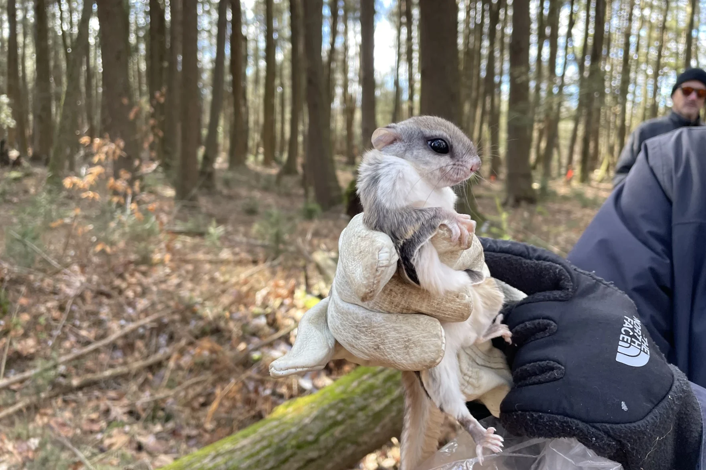
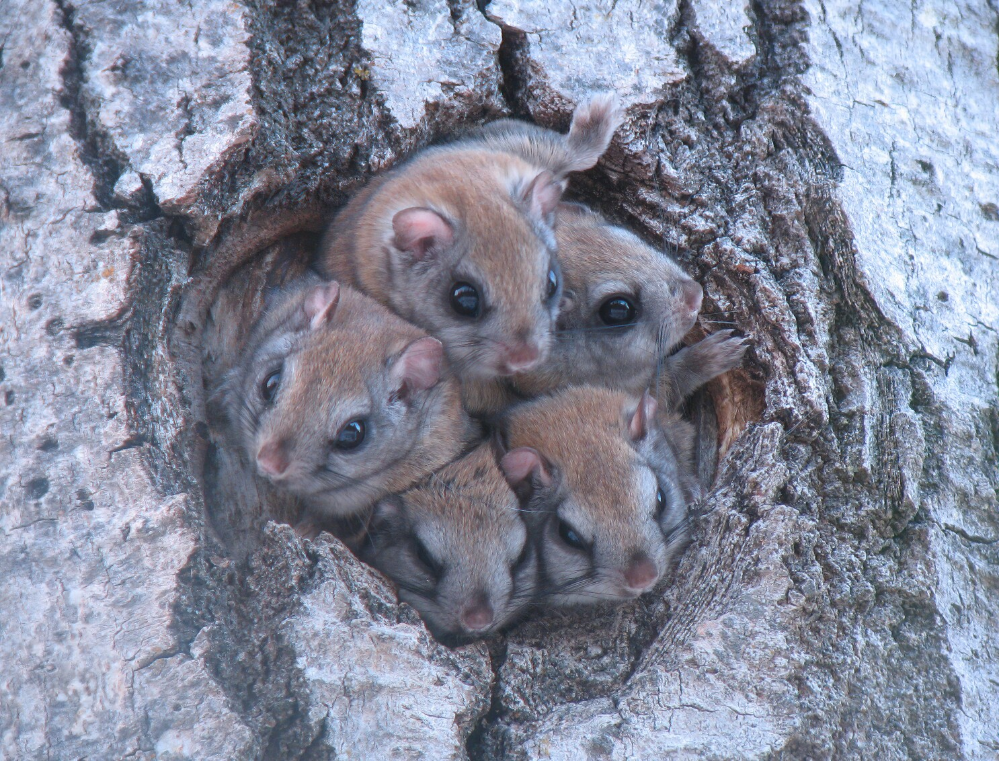
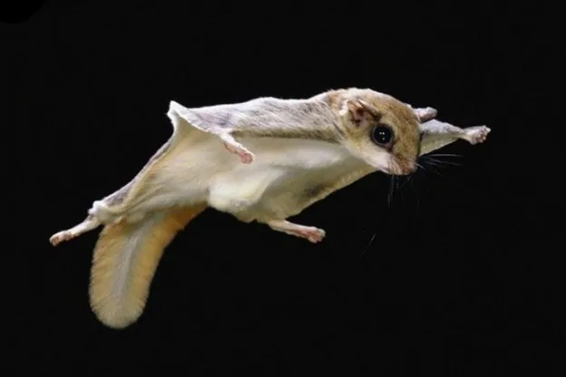
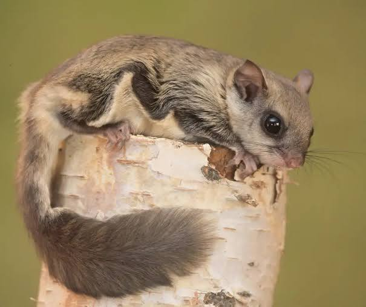
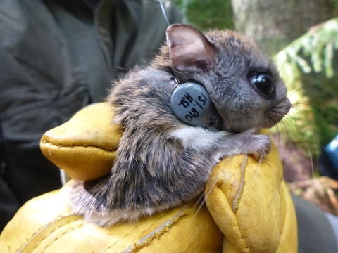
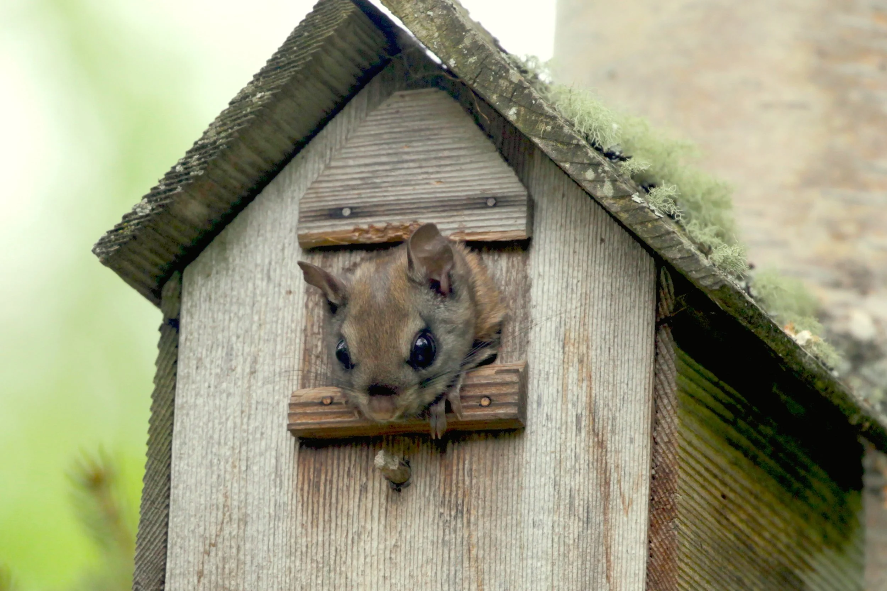

Go to Bottom
Go to Bottom
Glaucomys Sabrinus , also known as the Northern flying squirrel , is an endangered species in PA
 SPECIES is endangered in Pennsylvania. This is likely attributed to:
Because they are arboreal (tree dwelling) and nocturnal (awake at night), flying squirrels are elusive mammals. In fact, some people have misconceptions about them because of their elusiveness, such as the idea that they are a myth or that they don't exist. However, there are other factors that make northern flying squirrels (Glaucomys sabrinus) difficult to locate in Pennsylvania. Because northern flying squirrels have a more difficult time adapting to new environments compared to the southern flying squirrels, habitat loss has proven to be a challenge for them. Flying squirrels can glide from tree to tree thanks to skin flaps called patagia that stretch between their wrists and ankles. Northern flying squirrels have large eyes that help them see at night. Southern flying squirrels look a lot like their northern relatives and also live in Pennsylvania. Northern flying squirrels are a bit bigger, measuring 8 to 11 inches long, while southern flying squirrels are usually 8 to 10 inches. The fur of southern flying squirrels is white from base to tip, but northern flying squirrels have fur that starts out dark at the base and fades to white at the tip. Northern flying squirrels make their dens in tree cavities and line them with strips of bark. They mainly eat fungi and lichens, but also rely on acorns and conifer seeds. Unlike other squirrels, they do not hoard food. Instead, they search for food in the treetops during winter. Not much is known about their reproduction across the United States, but in Pennsylvania, they usually have one litter in mid to late May, with one to four young. These squirrels learn quickly and can take their first flight as early as three months old. Northern flying squirrels favor old-growth spruce and conifer forests as their habitat. Decomposing woody material scattered across the forest floor is essential for suitable habitat. Pennsylvania lacks sufficient forest areas that provide the ideal habitat for the northern flying squirrel. A significant number of the old-growth coniferous forests in Pennsylvania exist as small, fragmented areas. In Pennsylvania, the northern flying squirrel is exclusively located in the northern region, mainly in the northeast
 The main agency responsible for the conservation and protection of the northern flying squirrel is the Pennsylvania Game Commission (PGC). In 2001, the PGC endorsed a range of collaborative initiatives that tracked over 500 nest boxes to collect data on population and reproduction. In June 2007, the Commissioner authorized the classification of the northern flying squirrel as a state-endangered species. The PGC subsequently identified the squirrel as a priority species in the Wildlife Action Plan of the state. The Wildlife Action Plan for the squirrel includes identifying the exact range of the species, consistently monitoring its population and breeding trends, and recording patterns of habitat and space utilization. The Game and Wildlife Code also safeguards the northern flying squirrel, banning the hunting of this species. Other organizations, including the U.S. Fish and Wildlife Service and The National Wildlife Federation, have also contributed to the conservation of the species. Several private non-profit groups aim to enhance public awareness and comprehension of the northern flying squirrel, including the Cook Forest Conservancy, WeConservePA, and Defenders of Wildlife. The northern flying squirrel's recovery strategy relies on safeguarding existing populations by conserving areas with dense forests and excellent canopy cover. Maintaining these regions on state property is frequently the main priority. Private forest areas can serve as habitats for the northern flying squirrel, while also playing a crucial role in offering the public a sustainable wood supply. A harvesting technique that can aid in avoiding total habitat loss is implementing selective cuts and designating wildlife trees near the nesting sites of the flying squirrel. Additional efforts have been undertaken to establish habitats through plantations aimed at restoring certain desired tree species and environments. These efforts will only help bring the flying squirrel populations back over time after the trees mature.
 This is the bottom.